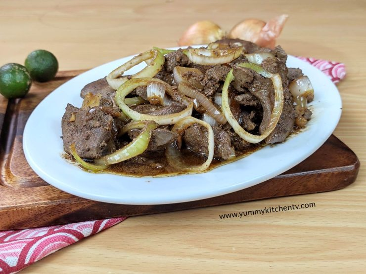

Home
Pork Liver Steak

Pork Liver Steak the calamansi takes it all
This have been my favorite one, my father even made an effort to buy ingredients of Liver Steak everyday for almost a week. Guess what, we only halted because father run out of money, lol.
Ingredients
- Liver Pork
- Calamansi
- Soy sauce
- Onion
- Peppercorn
- Salt
- Bay leaves/Laurel
- Water
Steps
-
Slice the onion in rings.
-
Prepare the liver by slicing it in preference.
-
Saute the onion first, then along with the liver till satisfied.
-
Add peppercorn and calamansi, salt if needed.
-
Pour soy sauce and water based on preference and wait till it boils..
-
Place the laurel and Enjoy!